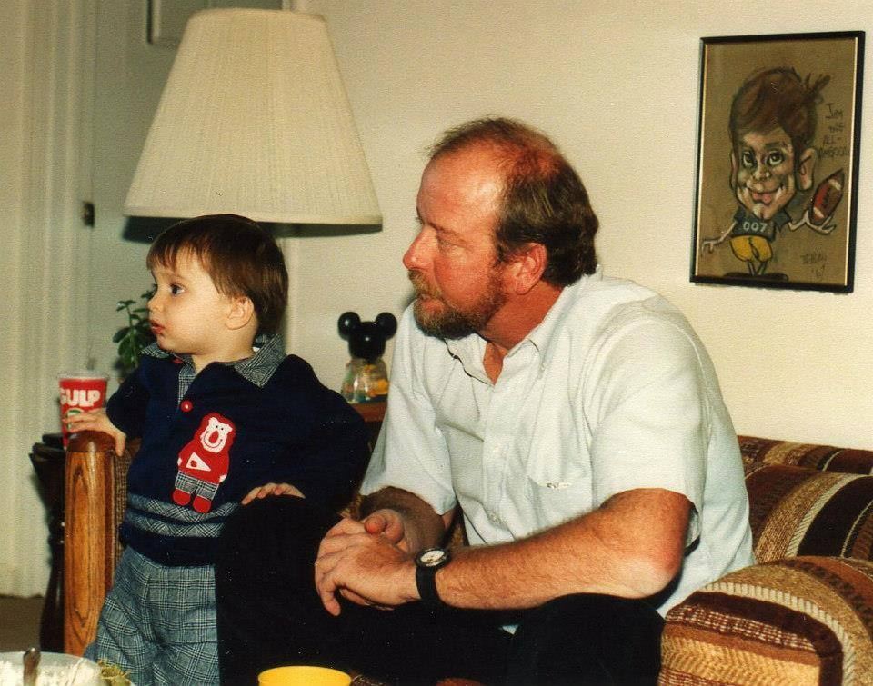
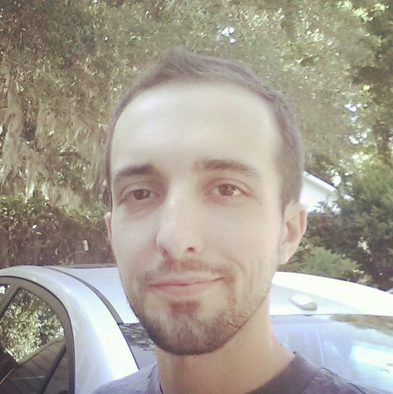

When I moved here I really didn't want to, so making friends was hard for a while. I attended Pinckney elementary (Yes, that is how you spell it.) and met a great friend that I still have to this day, Tyler Wellman, and also I met my bestfriend for life Ricky Taylor. Ricky went to another school, but I think thats why we were such great friends, we'd always hang out as soon as school was over and homework was done.
Middle school was a bit of an odd time, though I guess it is for all early teens. Joined the band when I was in the six grade and started playing trumpet. Was usually in the top 5% of my class and made standardized testing look like a joke. However, not many friends were made throughout middle school. Only about 3 names that I cant think of off the top of my head, Giff Waltz, Judge Kelly, and Lindsey Sydow. However, I was lucky, and went through my early life crisis and was all emo then...you know before it was cool. By the time I was a freshman I had straigtened out.
Freshman year came and I had high hopes for high school. I joined the Marching Band at Wando and we won 3 state championships. I was also a part of the pre-engineering tract of school there. The classes were fun, Band encompassed my life but I made a lot of lifetime friends that I see weekly up to now. In senior year I dropped out of band and took an internship at Tobias and West doing structural engineering. Glad I did it too, because I was interested in that field. But after that, I wanted to shun it and throw holy water at it.
My college days were short but sweet! I pledged Lambda Chi Alpha and became the 1137th initiate in the Epsilon Psi Chapter. I was also made social chair as a NIB(Newly Initiated Brother), which doesn't happen often. For the next two years I destroyed my liver, my GPA, and my relationship with a great girlfriend. But, I wasnt going to let this get the better of me, so I moved home to be with her when she transfered to C of C to study nursing, and got myself back on track in school at Trident for about a year.
The turbulent years to follow are the ones that have sent me here. I have faced addiction, the loss of my father, grandmother, and 4 close friends throughout highschool lost to suicide. The last three years have had ups and downs, mostly downs. And the ups were short lived, but I made it through alive and here I am changing my life.

My father and I were never that close. After I was forced to move to South Carolina, I only saw him about 3-5 times a year at max. As I got older, even less than that. Usually only on our birthdays (which were right after another, his September 19th, mine the 20th) and on Christmas when I was up in Virginia to see my stepdad's family anyways. (Who also suck, by the way) And I was always an estranged son by all means. He never sent me money, he didnt pay child support, he never called to see what I was doing with me life. He was more of a big friend than a father. I took advantage of this and used it to hate him and keep him out of my life, something I would regret.
Thats because my father was diagnosed with small cell lung cancer in 2009. He had a small procedure done and with no sign of the cancer cells in site after 6 months they thought they had beaten it. In 2011 it reared its ugly head again, and was originally found in his lymph nodes, which if any of you know about lung cancer, its a pretty bad sign. The next two summers I took 2 weeks off work just to spend time with him on his farm in Virginia. It was painful to watch him wither away, and it wasn't progressive for me, I only saw the results after however many months. By the time November of 2012 had rolled around, we got the news that it had spread to his spine, leaving him at most 3 months to live. I quit my job, I dropped my girlfriend, I lost a great lease on an amazing house, and packed up and went to take care of my dad, who never took care of me. My mom even pulled me aside and asked "Do you really want to do this for him?" And I knew that I had to, or I would have regretted not telling him how I actually felt and how he wrecked parts of my life. And I also knew it would eat me inside to know that I could be doing something to help him, and be looking after only me.
When I arrived, he was nothing but skin and bones. I fed him, cleaned him, did everything when hospice wasn't around. I talked to him mainly and that was what I think meant the most to him. I got to know my father better in the last 2 and a half months of his life, than I had ever known about him. He was a great man, and he tried really hard to make everything possible for me. He served his country, he worked a hard labor job till he passed away, and always was a person to light up a room when he walked in. People just liked his presence, and I miss it.
My Father passed away on December 23rd, 2012, I had fallen asleep next to him on the couch and when I woke up he was gone. Im glad my last words to him were, "I love you, goodnight Dad."
And here is a recent photo of me, so you can remember what I look like...or something.
 Back